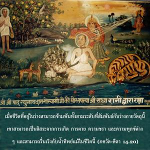
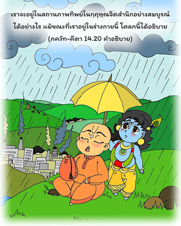
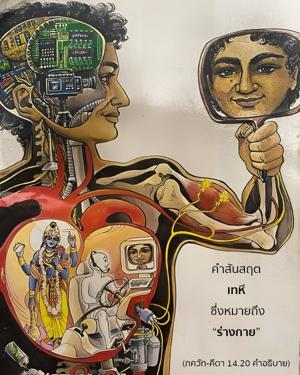

เมื่อชีวิตที่อยู่ในร่างสามารถข้ามพ้นทั้งสามระดับที่สัมพันธ์กับร่างกายวัตถุนี้ เขาสามารถเป็นอิสระจากการเกิด การตาย ความชรา และความทุกข์ต่างๆ และสามารถรื่นเริงกับน้ำทิพย์ได้แม้ในชีวิตนี้



เราจะอยู่ในสถานภาพทิพย์ในกฺฤษฺณจิตสำนึกอย่างสมบูรณ์ได้อย่างไร แม้ขณะที่เราอยู่ในร่างกายนี้ โศลกนี้ได้อธิบายคำสันสฤต เทหี ซึ่งหมายถึง “ร่างกาย” จากความเจริญก้าวหน้าในความรู้ทิพย์ ถึงแม้ว่าอยู่ภายในร่างกายวัตถุนี้ เราจะสามารถเป็นอิสระจากอิทธิพลของระดับต่างๆ แห่งธรรมชาติ รื่นเริงกับความสุขแห่งชีวิตทิพย์ และหลังจากออกไปจากร่างกายนี้ก็จะไปยังท้องฟ้าทิพย์อย่างแน่นอน ดังนั้น แม้จะอยู่ในร่างกายนี้ เราก็สามารถรื่นเริงกับความสุขทิพย์ได้ อีกนัยหนึ่ง การอุทิศตนเสียสละรับใช้ในกฺฤษฺณจิตสำนึกเป็นสัญลักษณ์แห่งความหลุดพ้นจากพันธนาการทางวัตถุ ประเด็นนี้จะอธิบายในบทที่สิบแปด เมื่อเป็นอิสระจากอิทธิพลของระดับต่างๆ แห่งธรรมชาติวัตถุแล้ว เราจะเข้าถึงการอุทิศตนเสียสละรับใช้